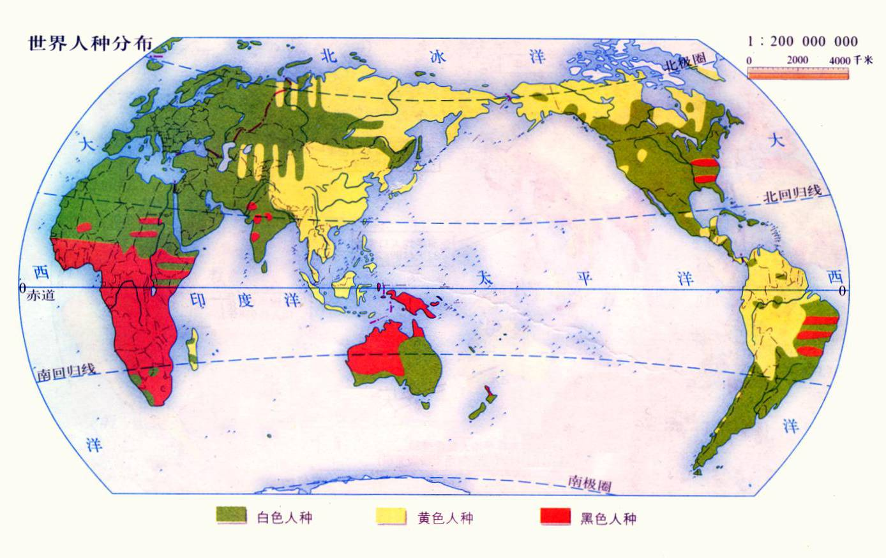

點擊上方的語言選單以切換語言
以下地圖顯示了不同人種在世界的分布情況：
顏色標記說明：綠色（白色人種）、黃色（黃色人種）、紅色（黑色人種）。
原住民屬於黃色人種，他們在冰河期從東亞出發，經過西伯利亞， 約 2 萬年前穿越白令陸橋進入美洲，並逐漸擴散到南美洲。 DNA 研究證實，美洲原住民與蒙古、西伯利亞地區的遠古人群有共同遺傳標記。 後來，歐洲殖民者與非洲奴隸輸入，使今日美洲成為高度多元族群社會。
撒哈拉以南以黑人為主，北非則與中東、歐洲族群混合。
主要為白人種，但歷史上有蒙古與中東族群交流。
以黃種人為主，與蒙古、西伯利亞、東南亞族群互動。
約公元前 2000 年，印-伊朗語族（Indo-Iranian，即「雅利安人」）從中亞草原遷入印度次大陸， 帶來早期梵語與吠陀文化，並與當地的達羅毗荼人融合。 這段歷史影響了今日印度的語言（印歐語系與達羅毗荼語系並存）、宗教與社會制度。
中亞歷史上是族群大熔爐。早期有印歐人（如吐火羅人）， 後有突厥、蒙古等民族遷入，並與原住人群融合。 傳統上中亞被視為高加索人種的延伸，但現代基因研究顯示， 中亞人同時擁有歐洲型與東亞型基因，是真正的「歐亞混合地帶」。
中東位於歐亞非三洲交界，自古是「文明搖籃」。 蘇美、巴比倫、波斯、阿拉伯帝國先後興起，使這裡成為白人種、閃米特人、 乃至非洲人群的融合地。伊斯蘭擴張與絲路貿易更進一步強化了族群多樣性， 使中東成為東西方文化與人種的交會點。
南亞、中亞與中東的人種歷史顯示，人類族群並非孤立存在， 而是在持續的遷徙與融合中形成現代的多樣格局。
世界人種分布是地理環境、歷史遷徙、殖民統治與文化交流共同作用的結果。 現代社會更重視族群融合與多元共存，而不再僅僅以傳統人種分類來理解世界人口。